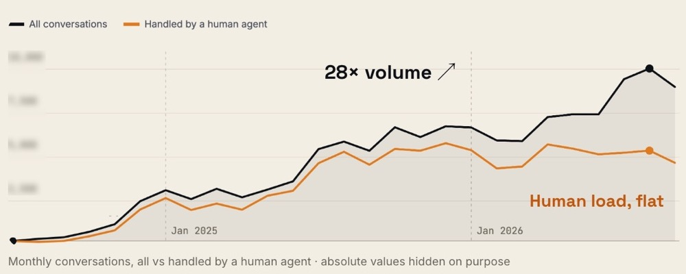
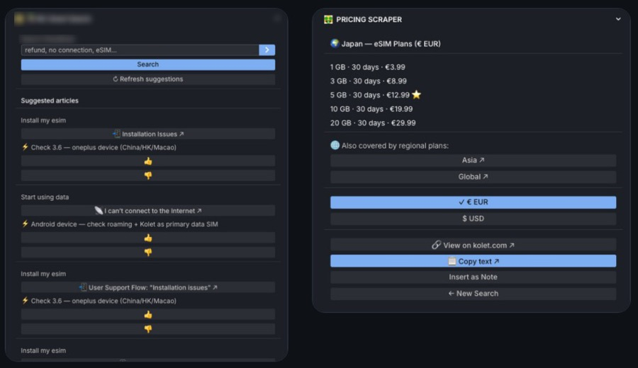

I'm Clément Dion, Global Head of Customer Operations at Kolet, a travel eSIM scale-up. I design and build the AI agents used daily by Care, Sales, Marketing and Tech, and the guardrails that make them safe to trust.
Each system replaced work someone was doing by hand, in Product, Tech, Payments, Finance, Sales or Marketing. I designed it, built it, shipped it and measured it.
AI read 9,000 conversations to rank why customers contact us, and gave Product a kill list: about 20% of contacts could be removed by a fix.
Contact rate at 13% in 2025. Tags hid the real reasons: 31% of conversations were menu taps with no text.
An AI agent reads the app and API code, writes one card per rule, and flags gaps for the founders. Reviewers only judge the cards.
One credit rule gave four different answers in four places of the product.
An AI agent tests each preview on iOS, Android and web, in every language, against the design, with a screenshot as proof.
Developers posted previews with "let me know if you find anything".
Stripe fraud rules, and an AI agent that builds each dispute's evidence file every day from five data sources. A human always makes the call.
Every chargeback needed a manual investigation before answering Stripe.
An AI agent documents each escalation, re-checks it every hour with fresh data and closes it when the fix ships.
Care agents wrote up every escalated bug for Tech by hand.
Of 18.7k customers paying with airline miles, only 52% succeeded. I found the two causes on the partners' side.
A loss reported at several million euros, traced back to a few thousand of real leakage, broken down by cause.
Prospects profiled (9 airlines, 4 hotel groups), plus a B2B lead-qualification agent and an e-reputation agent.
Agents meet teams where they already work, read data without touching it, and can only write through rules enforced in code.
A scheduled routine, a Slack mention or a "QA this" command.
Reads its rules and knowledge from Git, then queries systems read-only.
"The LLM decides what matters. The harness decides what it can write."
I joined Kolet's founding team in 2024 to build Customer Care from zero. I now run Customer Operations end to end: 17 people in 6 countries, 24/7.

Intercom workflows and Fin AI, retrained every day (100 updates in one month), with agents rating its answers.
Chasing customers who stopped replying could take up to 30% of an agent's shift.
A personal email sent automatically to every score below 7, and an AI agent that rebuilds each customer's journey to find what went wrong.
Agents found low-NPS customers by hand and emailed them. 25% replied.
A routing engine that gives each urgent ticket to the least-loaded agent on shift, tuned with the team in one week through 152 replies of feedback.
Agents picked tickets by hand.

Hubs in Brazil, Colombia, Morocco and the Philippines, led through team leads.
Team = contact reason, tag = root cause. Untagged conversations reopen automatically.
An internal knowledge base built from scratch; help center in 13 languages.
Scorecards, coaching and a team-leader layer.
One escalation path and weekly priorities with Product: fix causes, not tickets.
Contact rate as a product KPI, live cost to serve, Care in the investor report.
The rule: automate only what is already measured and documented.
Global Head of Customer Operations (since Jul 2025). Customer Care Lead before that: built Care from scratch and scaled it 15× in the first year.
User Care Expert & Product Referent: data-led processes, tooling and product feedback.
Lead Logistics Support: scaled the team from 2 to 20 across the US and Europe, 120+ B2B sellers, BPO partners.
From specialist to Team Lead of Tier 1 & 2 technical support across EMEIA and the Americas: 20+ people, 93% CSAT.